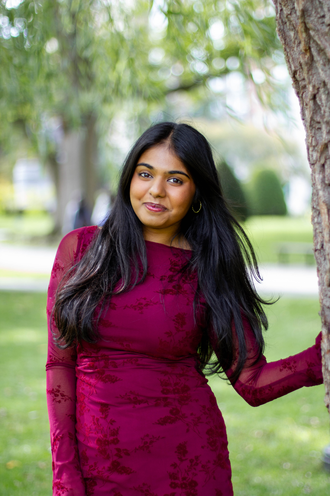

Hi, I’m Garima
A college student, dancer, and aspiring traveler with a full camera roll.

Hi! I’m Garima Lalwani, a Junior at Northeastern University studying Data Science. This website is a place to introduce myself and share a bit of what my days look like.
Outside of class, most of my time goes to the dance team. Practices, performances, and competitions fill a lot of my calendar, and they are also where some of my closest friends come from. I love visiting people as an excuse to see new places. Over the past year I have taken weekend trips to see friends at their colleges, explored Chicago, spent time at Acadia National Park with my parents, and traveled to San Francisco with a group of friends.
My family matters a lot to me, and many of my favorite moments are the ordinary ones: birthday dinners, engagement parties, weddings, and long catch-up conversations. I am also the kind of person who ends up taking the photos at group events, whether it is a housewarming, a club event, or someone’s birthday party, so my camera roll tends to tell the story of my year better than I can.
That is what the second page is about. I counted the photos I took each month from November 2025 to October 2026 and turned them into a chart. Some months were quiet and some were packed, and the numbers say a lot about how my year went. Take a look at the Photos page to see which months stood out and why. If you would like to get in touch, my contact details are at the bottom of this page.